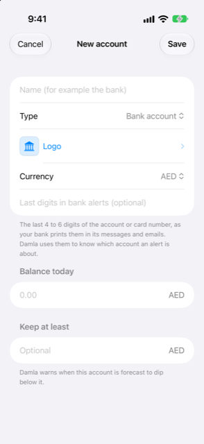

Guide › Accounts, cards and people
Logos and account details
Name an account, pick a logo, set the digits Damla uses to recognise it.
Every account in Damla has a name and a badge — its bank's logo, or a colour with the first letters of its name. It can also carry the last digits of its account or card number. The name and the badge are for you, so you recognise the account at a glance. The digits are for Damla: they tell it which account a bank message is about.

When to use it
- You are adding an account and want to give it a name and its bank's logo.
- A bank alert waits in the Inbox because Damla does not yet know the card's or account's digits.
- You want to rename an account later, keep a minimum balance in it, leave it out of the forecast, or archive it.
Step by step
Name an account and choose a logo
- While adding an account (Accounts, plus button, Add an account), type a name in Name (for example the bank).
- Tap the Logo row. The Logo screen offers No logo (initials) — a colour badge with the account's first letters — a list of banks under Banks, and a search under Not in the list?.
- Tap a bank in the list to use it.
- If the bank is not in the list, type its name in the Bank name field and tap Find logo online.
- Tap the result you want. Damla downloads it and keeps it on this phone. Tap Cancel to leave the logo as it was.
The Bank name field starts as the account's name, but you can change it. For example, an account called Maas at a bank can be searched by the bank's name instead. Once what you type is different from the account's name, the built-in list narrows to matching banks. If nothing matches, the whole list comes back.
Save the digits Damla should match
- When you add the account, type them in Last digits in bank alerts (optional): the last 4 to 6 digits of the account or card number, as your bank prints them in its messages and emails.
- To add them later — or to add another number — open the account, tap the card to flip it, and tap Details.
- Under Numbers in bank alerts, type the digits in the field and tap Add (the plus sign).
- Swipe a saved number to remove it.
- Tap Save.
Good to know
- The digits tell Damla which account an alert is about. The last 4 or 6 digits is enough; if your bank prints 4 digits and you saved 6, they still match.
- Damla accepts 4 to 8 digits, and the same digits cannot be saved on two accounts.
- The first alert from each card or account goes to the Inbox, because Damla does not know its last digits yet. Complete it once and Damla remembers the digits for good. You can take them away again in the account's Details.
- Find logo online runs only when you tap it. It sends only the bank name you typed, as a logo search, to Wikimedia Commons. No amounts and no other details are sent. The logo you confirm is cached on this phone.
- Before the name is sent, words that describe the account rather than the bank — savings, current, card and the like — are dropped from it. Damla may try up to three search phrasings, one after another, and stops at the first that finds something.
- Logos belong to their banks and are for your own use.
- The Logo row is also on the account's Details screen, so you can change a logo at any time.
- Other settings live on the same Details screen: Keep at least, a minimum balance Damla warns you about (not shown for cards and loans); Include in forecast; and Archive account. Archiving keeps the account's history, and it disappears from forms and the forecast.
- The logo appears on the account's row and on its card in Accounts.
Related
Something unclear or missing? Write to support@raveniq.ai and say which page.